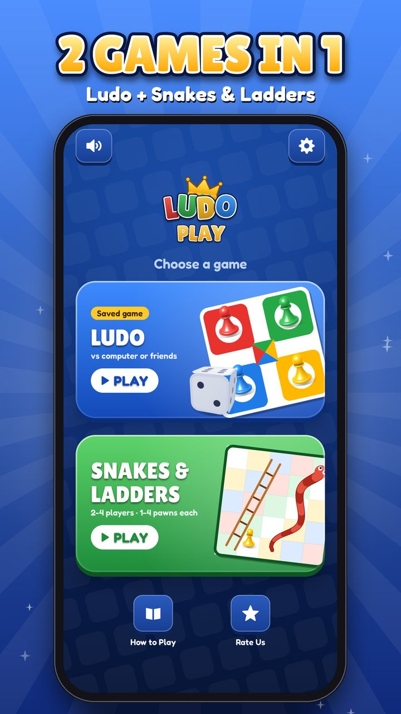

Quick answer: Ludo is played by 2 to 4 players with 4 tokens each. Roll a 6 to bring a token out, move clockwise by the dice roll, capture rivals by landing on them (except on safe start and star squares), and take your tokens up your coloured home column. You need an exact roll to finish, and the first player with all 4 tokens home wins.
Key facts
- Players: 2 to 4, with 4 tokens each
- Roll a 6 to bring a token out
- Extra roll for a 6, a capture or reaching home
- Three 6s in a row end your turn
- Exact roll needed to reach home
What You Need
Ludo is played by 2 to 4 players. Each player has 4 tokens of one colour (red, green, yellow or blue) and a single six-sided dice. The goal is simple: be the first to move all four of your tokens around the board and into your home.
Ludo Rules, Step by Step
- Start in the yard. All four tokens begin in your coloured corner (the yard).
- Roll a 6 to come out. A token can only leave the yard when you roll a 6. It is placed on your start square.
- Move clockwise. Move one token forward by the number you rolled. If you have several tokens on the board, you choose which one to move.
- Capture rivals. If your token lands on a square with an opponent's token, the opponent's token is sent back to its yard.
- Use safe squares. Start squares and star squares are safe. Nobody can be captured there.
- Enter your home column. After going round the board, a token turns into its own coloured column. Opponents cannot enter it, so tokens there are safe.
- Finish with an exact roll. A token needs the exact number to reach the centre home.
- Win. The first player to bring all four tokens home wins.
Extra turns and the three-sixes rule
- 🎲Roll a 6 and you get another roll.
- 💥Capture a token and you get another roll.
- 🏠Bring a token home and you get another roll.
- 🚫Roll three 6s in a row and your turn ends. The third 6 is not played.
- ⏭️No legal move? The turn passes to the next player, even on a 6.
🏡 House rules vary from family to family. Some people let a token come out on a 1, or play without the exact-roll rule. The rules above are the most common standard set, and they are the rules used in Ludo Tokens.
8 Tips to Win More Ludo Games
- 1️⃣Get tokens out early. Use your 6s to bring new tokens out, so you have more choices on every roll.
- 2️⃣Don't race one token alone. Spreading out gives you options when a roll doesn't suit your leading token.
- 3️⃣Park on safe squares. When an opponent is right behind you, a star square is the best place to wait.
- 4️⃣Count the gap. A token 1 to 6 squares in front of an opponent is in danger. Move it away or onto a safe square.
- 5️⃣Capture when you can. Sending a token back to the yard costs your opponent a 6 and many turns, and you get a bonus roll.
- 6️⃣Stay near your start square. A token waiting just outside the yard can punish rivals who pass by.
- 7️⃣Plan the home stretch. Because you need an exact roll, keep a second token moving so small rolls aren't wasted.
- 8️⃣Use the hint. In Ludo Tokens, the hint button shows the best move when you're not sure.



Snakes and Ladders Rules
Snakes and Ladders (Saap Seedi) is played on a board numbered 1 to 100. Ladders take you up; snakes bring you down. Here are the rules used in Ludo Tokens:
- 2 to 4 players, each with 1 to 4 pawns. Any seat can be a person or the computer.
- Roll and move. Any roll brings a pawn onto the board. Move one pawn forward by the roll.
- Climb and slide. Land at the bottom of a ladder to climb it. Land on a snake's head to slide down to its tail.
- Cut! If your pawn lands on a square holding another colour's pawn, that pawn goes back to the start. Pawns of the same colour never cut each other.
- Roll a 6 for another roll, up to 2 bonus rolls in a row.
- Exact finish. A pawn can only move if it lands on 100 or before it.
- Win by bringing all your pawns to square 100 first.
Snakes and Ladders is mostly luck, but with several pawns you get real choices: move the pawn that lands on a ladder, avoid ending your move just above a rival's pawn, and use a big roll to cut a rival who is close to 100.
Play Both Games Offline
Ludo Tokens puts Ludo and Snakes and Ladders in one free app. Play against 1 or 3 computer players, or pass the phone and play with friends and family. It works offline, saves your Ludo match automatically and has 7 themes, from Classic to Space.
Frequently Asked Questions
How do you start a game of Ludo?
Each player puts 4 tokens in their yard. You need to roll a 6 to bring a token out onto your start square.
What are the safe squares in Ludo?
The start squares and the star squares are safe. A token on a safe square cannot be captured. Your own home column is also safe.
Do you get an extra turn for a 6 in Ludo?
Yes. You roll again after a 6, after capturing a token and after bringing a token home. Rolling three 6s in a row ends your turn.
Do you need an exact roll to finish in Ludo?
In standard rules, yes. A token needs the exact number to reach home.
Can I play Ludo offline against the computer?
Yes. Ludo Tokens lets you play Ludo offline against 1 or 3 computer players, or with friends on one phone.
Roll the Dice Tonight
Ludo and Snakes and Ladders in one free app. Play offline vs computer or with friends.

Written by Kamal Kakkar
Founder of Yunok Tech and Android developer with 10+ years of experience at Nagarro and KareXpert, building apps for the healthcare and banking domains. Kamal also teaches Kotlin & Jetpack Compose.
LinkedIn → Medium → Android Course →